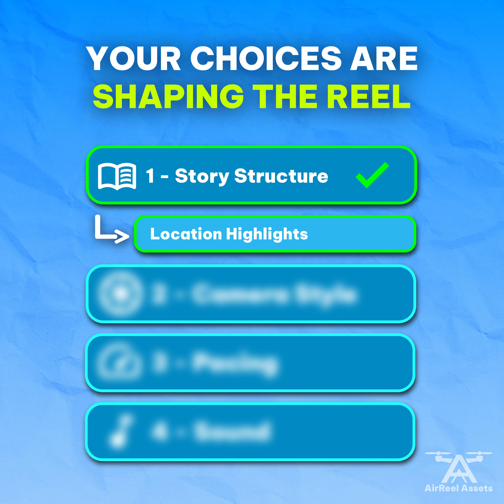

With a degree in Digital Media and a concentration in graphic and web design, I have explored multiple areas of media production, with a current focus on digital graphics, web/UI, and expanding into video editing. My broad skill set allows me to contribute to a range of projects while maintaining a strong foundation in visual design.
Whether I’m creating graphics, working on websites, or editing video, I’m motivated by bringing ideas to life and refining them into their best possible form. I take a flexible, iterative approach to the creative process, allowing ideas to evolve while staying focused on a strong, polished final result.
As part of a university advertising project, I designed a series of five billboard advertisements for NextRep, a conceptual AI-powered training app created to bring professional-level performance insights to everyday athletes. The billboard series served as one component of a larger brand awareness campaign, introducing the brand through a sequence of connected advertisements rather than repeating a single message.
Objective
Design a cohesive billboard campaign that introduced the NextRep brand, generated awareness, and encouraged viewers to learn more through clear calls to action. Each billboard was intended to communicate a different aspect of the brand while maintaining a consistent visual identity across the series.
Design Approach
Rather than treating every billboard as the same advertisement in a different format, I designed each piece around its intended viewing environment. Highway billboards relied on concise messaging and prominent branding to capture attention in only a few seconds, while placements viewed for longer periods allowed for additional supporting information. Throughout the series, I prioritized readability, visual hierarchy, and minimal layouts to ensure each advertisement communicated effectively while remaining visually cohesive.
Deliverables
- Five billboard advertisements
- Advertising copy
- Brand-consistent visual layouts
Reflection
This project reinforced that effective advertising extends beyond creating visually appealing graphics. It challenged me to consider how location, viewing time, and audience behavior influence both design and messaging. By balancing consistency with location-specific adaptations, I gained a stronger understanding of how individual advertisements can work together to support a unified brand awareness campaign.
Social Media Strategy • Content Planning • Campaign Scheduling • Content Creation
*Video assets are stock assets

We asked, you answered. Well, the folks on Twitter (X) answered… The overwhelming response for the story structure was that we should do a location highlight reel! This means that we’re spotlighting the most jaw dropping places and building the story around where the adventure takes us!
Final reel is LIVE on Twitter (X)! To those who participated, we had a blast using your insights to create this project and hope that you learned something new!
As part of a university social media marketing project, I developed and executed a simulated two-week campaign for AirReel Assets, a conceptual drone cinematography brand specializing in aerial content for social media. Rather than focusing solely on promoting services, the campaign invited the audience into the creative process by allowing them to influence the production of a final drone reel through interactive polls and campaign updates.
Objective
The objective was to build brand awareness and trust by creating an interactive campaign that encouraged audience participation throughout the creative process. Rather than simply showcasing completed work, the campaign aimed to demonstrate transparency, increase engagement, and strengthen the relationship between the brand and its audience through consistent, platform-specific content.
Campaign Approach
Before creating any content, I planned the campaign as a complete two-week schedule, determining the purpose of each post, the appropriate platform, and the overall flow of communication.
Deliverables
- 22 scheduled social media posts
- Campaign messaging and copywriting
- Platform-specific graphics and animations
- Interactive poll posts
- Behind-the-scenes content
- Final drone reel
- Two-week publishing schedule
Reflection
This project strengthened my understanding of planning content beyond individual posts and reinforced the importance of developing a strategy before production begins.
An exploratory UI concept focused on how holiday-specific features could be integrated into an existing ride-sharing experience without disrupting its core functionality.
a conceptual music streaming application designed to create a more personalized and engaging listening experience for both music fans and independent artists.
focuses on a streamlined ordering experience that allows users to search for meals, customize orders, complete checkout, and track deliveries in real time.
For this project, I designed and developed a website for a mock brand called AirReel Assets, a drone cinematography service. The goal was to create a professional, realistic site that would represent the brand's services effectively.